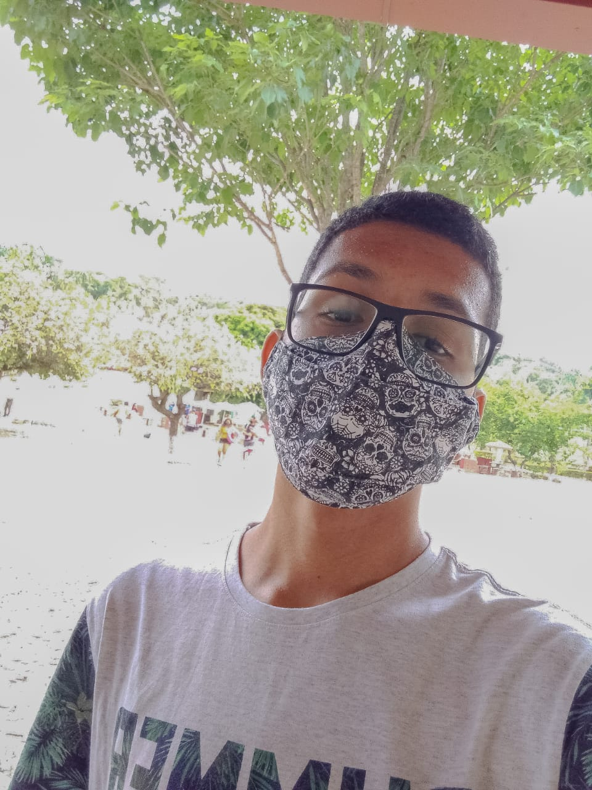
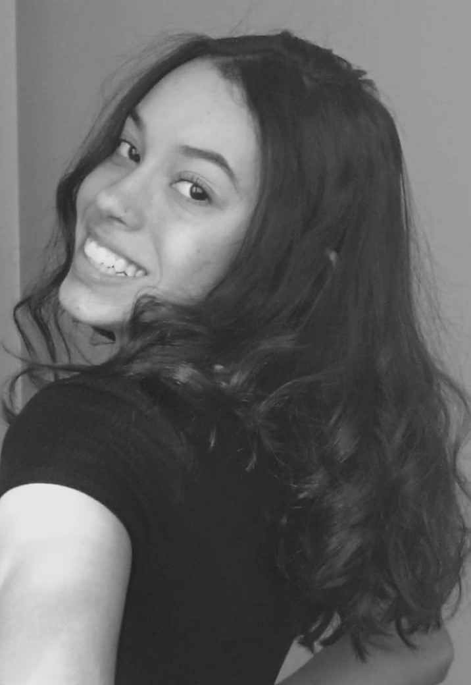

Esse site foi desenvolvido pelos estudantes do primeiro ano do ensino técnico em Informática do CEFET-MG
Iasmin de Almeida Furtado, 16 anos
Kauã dos Santos Rodrigues, 16 anos
Maria Eduarda Nunes Silva, 16 anos
Algumas das fontes que usamos como material de pesquisa para o conteúdo desse site:
Análise da obra "Mona Lisa" de Leonardo da Vinci em: Toda Matéria. Escrito pela professora Daniela Diana, licenciada em letras.
Análise da obra "Homem Vitruviano" de Leonardo da Vinci em: Toda Matéria. Escrito pela professora Daniela Diana, licenciada em letras.
Análise da obra "Pietà" de Michelangelo em: Toda Matéria. Escrito pela arte-educadora e artista visual Laura Aidar.
Análise da obra "La Velata" de Rafello Sanzio em: Medium. Escrito por Elizabeth Sariedine, artista visual.
Análise da obra "Juízo Final" de Michelangelo em: Info Escola. Escrito por Gabriella Porto.
Análise da obra "São Marcos" de Donatello em: Wikipédia. (Autor desconhecido)
Texto sobre o artista Leonardo da Vinci em: Wikipédia. (Autor desconhecido)
Texto sobre o escultor renascentista Donatello em: Wikipédia. (Autor desconhecido)
Texto sobre o artista renascentista Michelangelo em: Wikipédia. (Autor desconhecido)
Texto sobre o pintor renascentista Rafael Sanzio em: Wikipédia. (Autor desconhecido)
Vídeo sobre Renascimento em: Youtube. Postado no canal "Toda Matéria".